保险个人IP视觉研究阶段总汇报
核心结论：本阶段已经完成市场扫描、账号母版拆解、好画面判断标准与每日发现机制的搭建。当前最重要的成果不是“找到多少大账号”，而是建立了一套能持续判断画面、匹配人物、指导拍摄并用数据复盘的视觉决策系统。下一阶段建议从扩大名单转向建设首批8至12套可拍摄母版，并选择2至3个内部IP进行实拍验证。
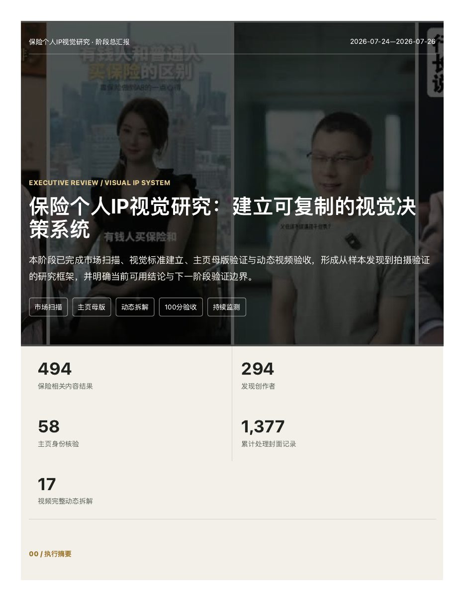
图1｜阶段研究总览：从市场发现到动态验收，形成完整证据链。
一、这项研究要解决什么问题
过去对短视频画面的判断容易停留在“这个场景好不好看”“这个账号粉丝多不多”。这两个判断都不足以指导生产。本研究将目标重新定义为：
- 把主观审美转化为可筛选、可评分、可复用、可拍摄验收的标准；
- 找到不同人物IP分别需要建立的信任类型，而不是让所有人套同一套场景；
- 区分主页封面、实际视频播放和动态表现，避免只凭一张截图做决定；
- 形成持续发现优质画面、沉淀母版并进入真实发布验证的长期机制。
研究边界：只研究人物IP的场景、构图、光线、色彩、标题、字幕、动效、插图与视频插入方式，不评价或复制账号观点、产品和销售内容。
二、阶段成果与证据规模
| 研究阶段 | 完成规模 | 解决的问题 |
|---|---|---|
| 保险市场扫描 | 16个主题、494条内容结果、294位创作者、58个主页核验、32个个人IP、922张封面 | 市场上有哪些个人IP，主要使用哪些画面形式 |
| 8个账号深拆 | 239张主页封面、25条代表视频、17条逐镜头动态分析 | 一个IP内部有几套稳定母版，灯光、构图、字幕和剪辑如何变化 |
| 质量标准建立 | 四类信任原型、100分评分表、85分准入线、四项一票否决 | 什么是好画面，以及如何统一决策 |
| 每日监测试跑 | 53条跨行业样本、7个主页复查、216张封面、4个粉丝达标账号、0个正式新增 | 验证标准能否阻止低质量样本进入标杆库 |
说明：累计处理封面记录为1,377条，包含不同阶段采集，不代表完全去重后的唯一作品数。
三、研究方法：六步证据链
- 内容发现：按账号主页主要讲述的方向寻找候选，不依赖昵称关键词。
- 身份与量级：排除公司号、搬运号和多人轮岗账号；保险个人IP以30万粉丝为成熟起点，跨行业专业IP以50万粉丝为正式对标起点。
- 视觉盲筛：先忽略内容观点与互动量，只看人物、状态、场景、构图与光色。
- 主页复现：最近约30条作品中，同一母版至少出现3次，排除偶发精修。
- 动态核验：下载代表视频，检查转头、手势、对焦、曝光、字幕动效、B-roll和竖屏比例。
- 评分入库：按100分量表验收，85分以上才进入正式标杆母版池；当天没有合格样本时允许0新增。
为什么设置30万和50万：现有32个保险样本的粉丝中位数约18.9万，前25%分界约49.8万。30万高于行业中位数，能够筛出相对成熟的保险账号；律师、医生、财经等跨行业专业赛道受众更广、成熟供给更多，因此正式对标线提高到50万，100万以上列为跨行业核心头部。粉丝量只代表运营成熟度，不计入审美评分。
四、保险个人IP市场扫描
4.1 样本组成
严格头部7个：懂保爷科普、保瓶儿、二姐聊保障测评、保险一点通、保之道、知兰保-宜顾问、西西的保险说。
垂直代表23个：茶派说社保、bella核保课堂、青山说养老、小师妹说保、奶爸保险测评、王辰讲保险、汉林说养老、demi说保险、哲里蒋保险测评、保险达人赵裕庆、仁哥鉴保、何欢说养老、梁俊安心保、霞姐说保、邓华的保险创业日记、杜冠华、丽君说保险、李越保险侠、财商-黄永鳌、大连刘媛媛商业保险、薛金花养老规划、俊姐保险测评、懂保险的鹏哥。
用户指定补充2个：有毒有料陈葭怡、微易老周。两者用于版式研究，不挤占正式30人样本。
4.2 反复出现的六项共性
| 因素 | 市场共性 | 对生产的启示 |
|---|---|---|
| 人物 | 脸是第一锚点；半身或近景约占画面35%至60%，眼睛接近上三分之一 | 先固定人物距离、眼位和服装气质，再设计模板 |
| 标题区 | 常落在上中区或胸口至下三分之一，通常2至4行 | 标题位置固定，按句替换，避免每条重新排版 |
| 颜色 | 白、黄负责阅读，红色只强调数字、否定词和关键短语 | 主色保持长期一致，减少无目的换色 |
| 字体 | 粗黑体为主，平均标题约29个汉字；数字和问句高频 | 层级比字体花样更重要，控制在两种字号和两种字重内 |
| 文字动效 | 固定字幕区内淡入、弹入或硬替换，少用整屏飞字 | 人物口播越稳定，文字节奏越需要承担停顿和重点 |
| 插图/视频 | 截图、表格、新闻页用硬切；生活场景用B-roll；城市类账号常见人物叠景 | 插入素材一次只承担一个主信息层，避免遮住人物 |
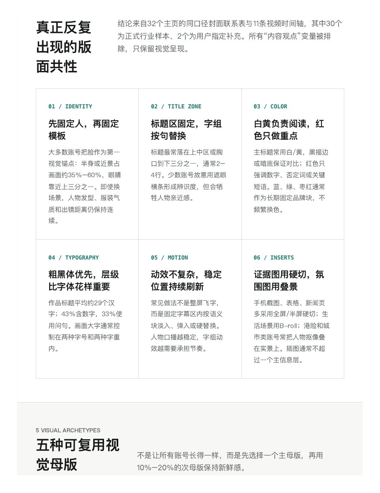
图2｜市场共性：人物、标题区、颜色、字体、动效与插入素材的稳定规律。
4.3 五种可复用视觉母版
- 固定棚拍口播：固定背景、机位、服装气质和字幕区，适合高频稳定生产。
- 黑金专业卡：暗背景、大标题、人物半身与数据卡，专业感强，但容易压暗和同质化。
- 生活纪录片：家庭、工作、出行连续出现，以人物经历建立信任。
- 抠像知识卡：人物叠城市或资料背景，信息密度高，对制作完成度要求更高。
- 证据图混剪：口播与截图、表格、手机界面硬切，强调“有依据”的视觉感。
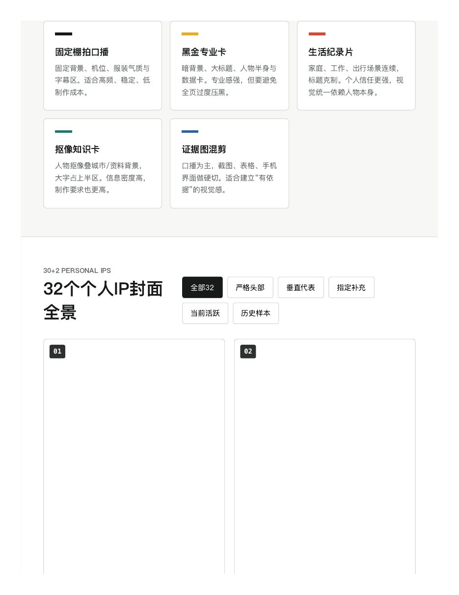
图3｜五类母版不是统一答案，而是账号主母版与补充母版的结构库。
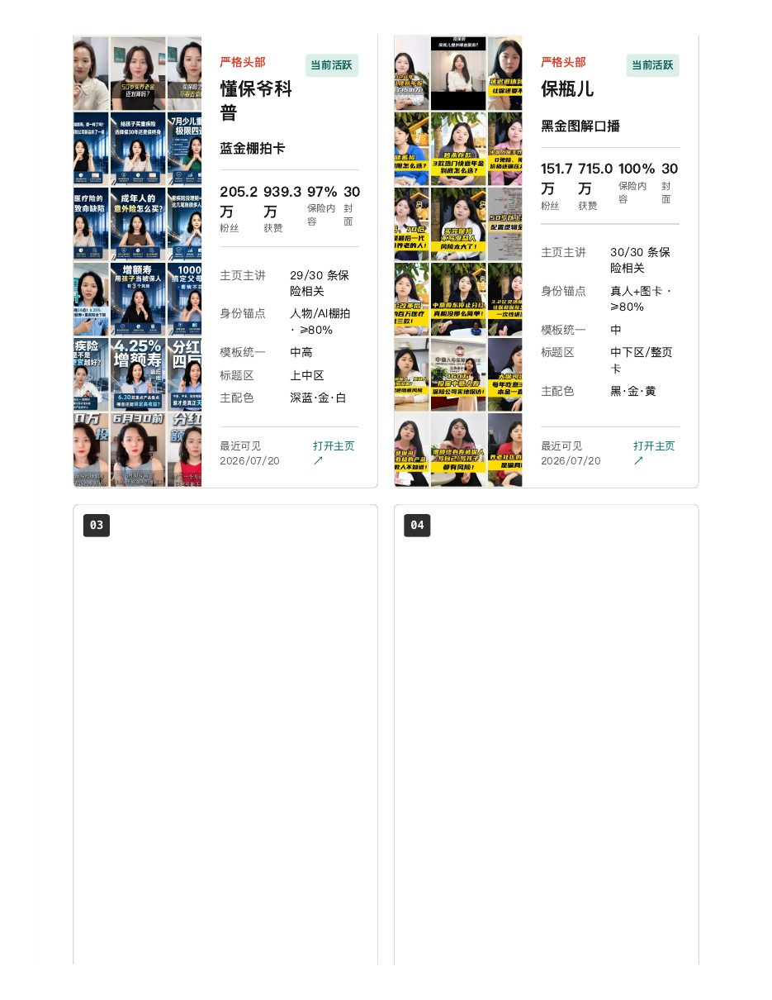
图4｜32个保险个人IP主页样本的部分证据页。
4.4 当前市场九种画面呈现方式
| 类型 | 市场作用 | 主要风险 |
|---|---|---|
| 固定棚拍口播 | 低成本、高频、稳定 | 画面扁平、同质化、像流水线 |
| 办公室顾问型 | 办公桌、会客区、书房证明职业身份 | 人物贴墙、摆件堆砌 |
| 访谈/播客型 | 侧身、麦克风和关系位提升层次 | 横屏素材在竖屏中有效面积不足 |
| 大屏/白板讲解 | 提高解释效率 | 图表抢过人物主体 |
| 证据图解型 | 保单、报告、数据和新闻截图辅助说明 | 信息层过多，人物被资料吞没 |
| 商务纪录片型 | 办公、会谈、出差、演讲建立真实经历与规模感 | 制作成本高，容易变成空镜堆积 |
| 生活场景口播 | 家、咖啡厅、汽车、酒店和户外增强关系感 | 生活感过强时会稀释专业性 |
| 故事/角色演绎 | 情景对话、案例还原和轻剧情增加变化 | 难以稳定成母版 |
| 直播切片/AI/纯卡片 | 低成本生产方式 | 完成度不足时不具备视觉参考价值 |
市场判断：真正稀缺的不是新的颜色或“更豪华的背景”，而是场景、行动、人物身份和竖屏平台比例同时成立，并且能够连续复用30条的母版。
五、8个指定IP内部版式与视频风格
判定规则：稳定版式需在最近样本中至少重复3次；仅更换服装、灯光或景别但标题与字幕系统不变，记为制作变体；场景、构图、标题、字幕和剪辑至少三项同步变化，才算独立母版。
5.1 有毒有料陈葭怡
样本：29条近作，3套稳定版式。主母版为深色幕布暖侧光（15/29），补充为暖色家居漫射光（11/29）和蓝灰窗景冷调光（3/29）。人物始终保持中近景居中或轻偏侧；顶部白黄粗黑标题常驻，底部语义块字幕用白黄高亮与黑描边。深色版以硬切字幕为主，暖家居版增加图标、要点上滑和星芒，冷调版加入彩块、箭头、爆炸框、竖屏插视频与局部数码放大。
可借鉴点：同一标题母版可以通过三套灯光和场景建立气质变化，不必每次重做账号识别系统。
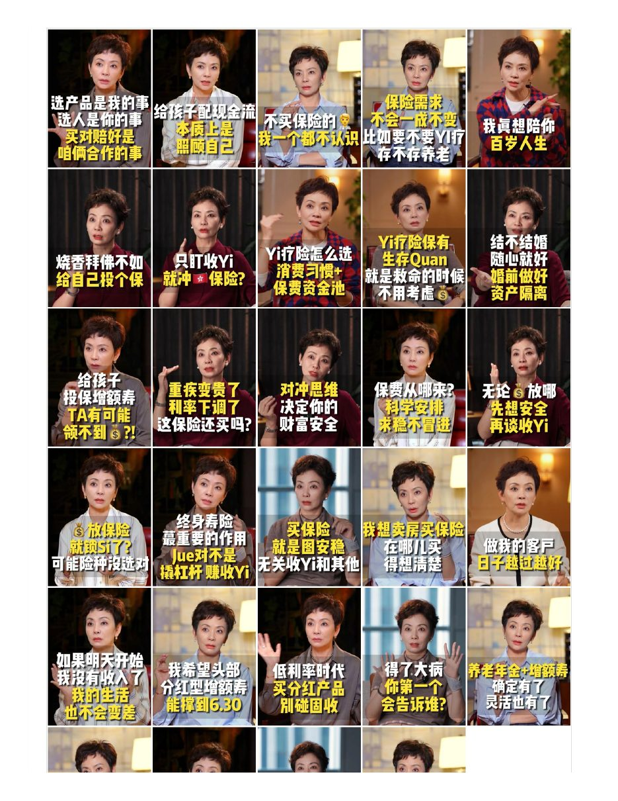
图5｜有毒有料陈葭怡：同一人物识别系统下的三套稳定灯光场景。
5.2 微易老周
样本：30条近作，2套独立母版。红幕舞台脱口秀（15/30）采用立姿持麦、追光和全身/中近景切换，左上栏目名常驻，底部黄白大字整句替换，并穿插观众反应；室内坐谈口播（15/30）采用暖调三点布光、扶手椅、书架与植物，中景稳定，顶部白金标题和底部小号白字字幕，基本一镜到底。
可借鉴点：舞台负责势能与记忆点，坐谈负责解释与信任，两套母版承担不同功能。
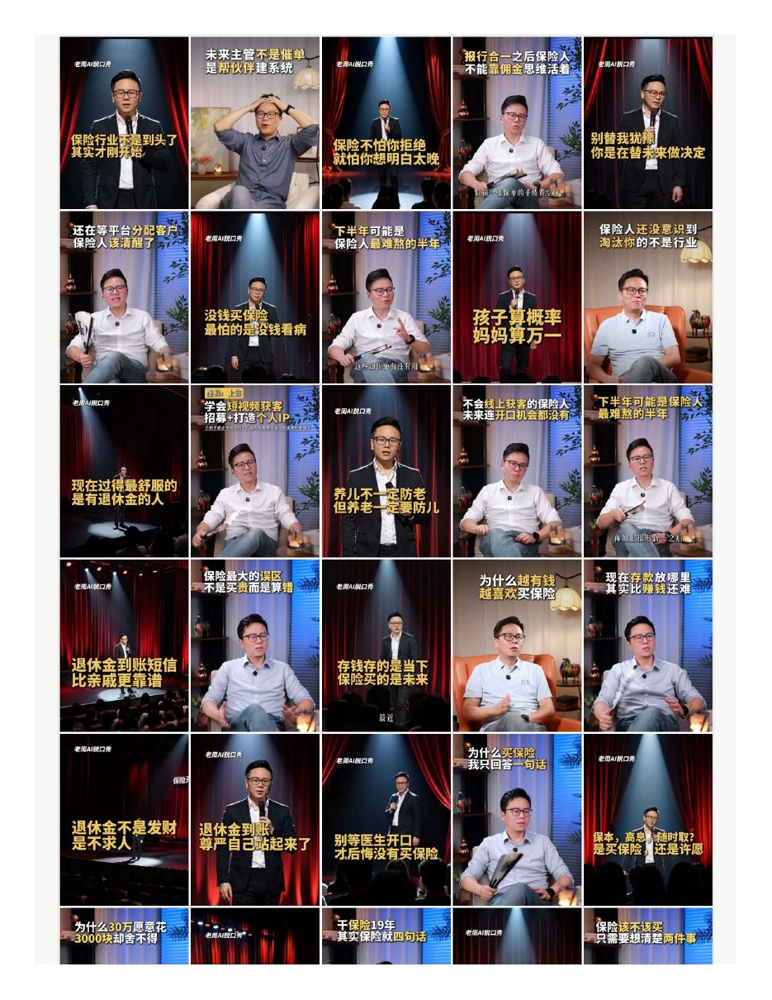
图6｜微易老周：舞台型与坐谈型双母版并行。
5.3 财商-黄永鳌
样本：30条近作，2个制作变体。暖色商务正装口播（13/30）与暖色衬衫近景口播（17/30）共享同一暖色浅景深、固定中近景、顶部提问式白字黑描标题和底部白字/黄色重点词字幕。全程单镜头，字幕按停顿硬切，无B-roll和镜头运动。
可借鉴点：生产效率高、识别稳定；变化主要依靠服装和景别，适合高频输出，但需要防止长期视觉疲劳。
图7｜财商-黄永鳌：一套稳定暖色近景母版的两批制作变体。
5.4 年金一哥｜黄嘉祥
样本：30条近作，2套独立母版。车内自然光近景（10/30）保留车窗环境，以半透明黑色中下栏、白字和黄色重点词表达真实感；灰背景商务访谈（20/30）使用冷灰纯背景、正装领带、均匀克制光线，顶部金色双行标题与底部身份条形成固定三段式构图。
可借鉴点：车内版建立在场感，灰背景版建立权威感；场景变化时文字包装也同步重做，区分明确。
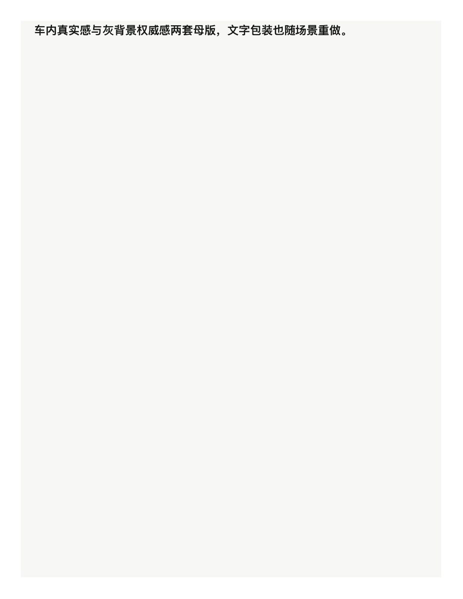
图8｜年金一哥｜黄嘉祥：车内真实感与灰背景权威感双母版。
5.5 谢员外观世界
样本：30条近作，1套高度稳定母版（30/30）。深蓝黑背景、硬侧光、中近景坐姿与镜头凝视构成权威状态；超大英文暗纹、栏目签名、黄色粗黑主标题和小号副标题形成杂志封面层级。视频内固定机位，字幕在胸前整句硬切，几乎无B-roll。
可借鉴点：统一度最高，靠光线、状态和排版建立权威，而不是依赖频繁切镜。
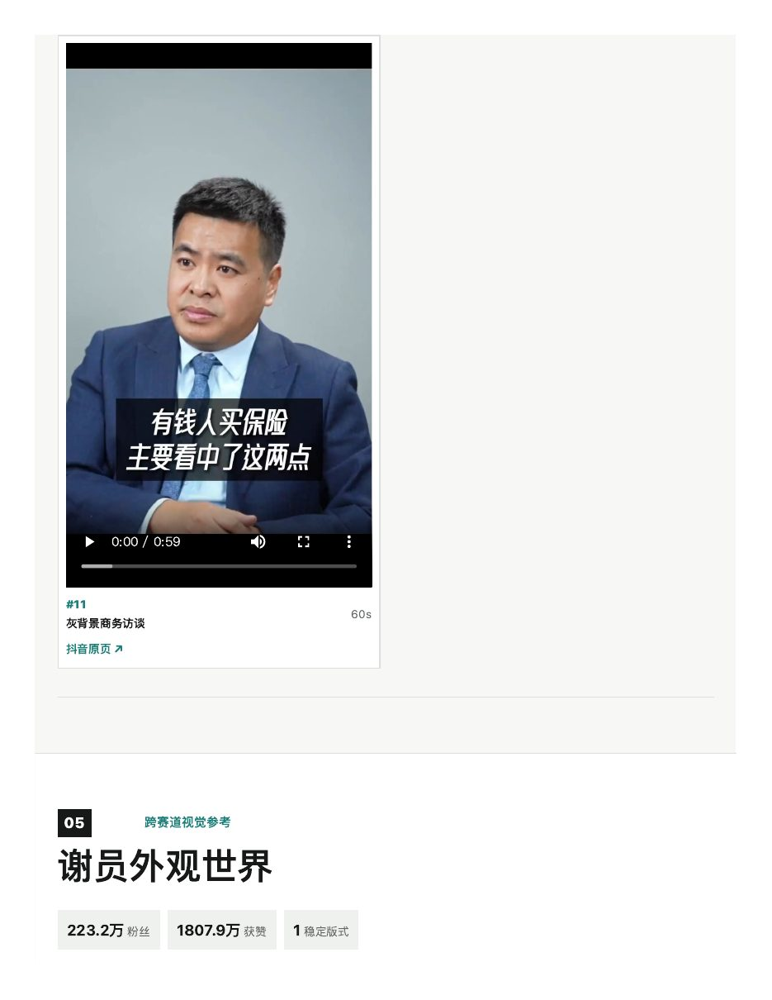
图9｜谢员外观世界：30条近作复用同一张深蓝杂志封面母版。
5.6 董可人
样本：30条近作，1套稳定母版（30/30）。明亮窗景虚化，人物居中偏上，蓝色服装形成固定色块；中央横贯黑色标题带，以白字和冰蓝重点词构成强识别，左下身份信息常驻。字幕逐句淡入或硬切，低剪辑、无B-roll。
可借鉴点：中央黑带牺牲部分人物完整性，但换来强系列识别；适合观点短卡，不适合所有人物和长叙事。
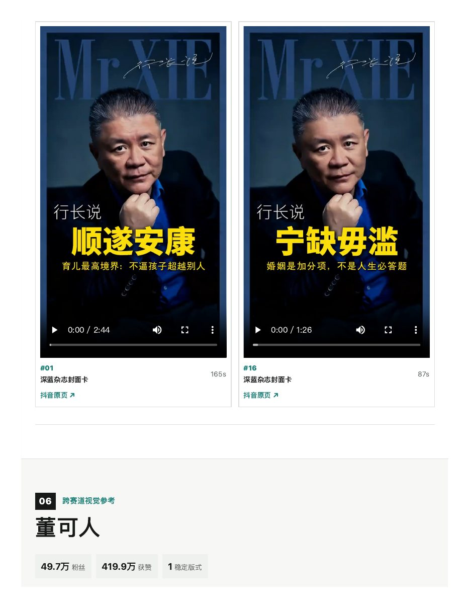
图10｜董可人：上下分区与中央黑带构成强识别信息卡。
5.7 港圈Lina姐
样本：30条近作，2套稳定版式、2套实验版。香港天际线明亮口播（21/30）以城市窗景承担身份信息，人物中景居中或轻偏侧；深色散景棚拍（6/30）用暖色面光、黑服装和金色文字承载重信息，并插入活动照、数据图和香港城市素材。暖橙纯色棚拍（2/30）和香港身份风景卡（1/30）尚未达到稳定阈值。
可借鉴点：城市景观可以成为资源与地域身份的证据，但人物必须通过补光、服装和轮廓从窗景中分离。
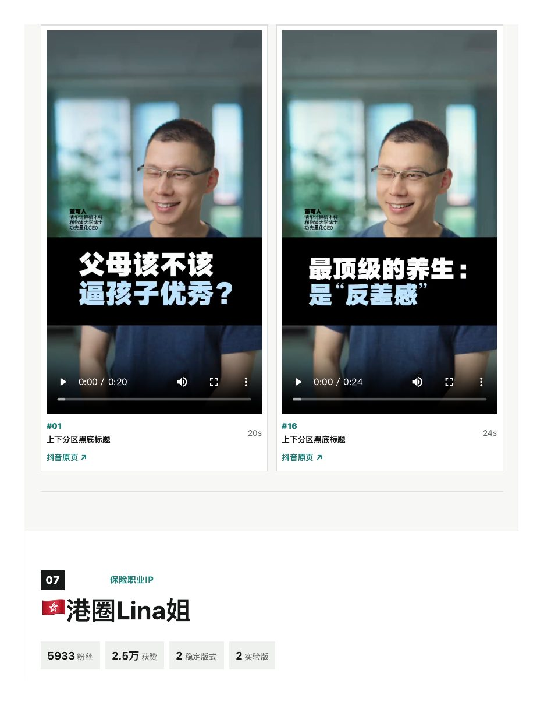
图11｜港圈Lina姐：明亮天际线主母版、深色散景重信息母版与实验版。
5.8 芷柠说
样本：30条近作，3套稳定版式、1套实验版。夜景窗边情绪访谈（15/30）以人物偏右和左侧留白承载细白字；暖色东方室内访谈（9/30）用暖木屏风、器物、烛光和金色书法标题建立成熟克制感，并穿插意象B-roll；明亮灰蓝棚拍观点卡（5/30）采用高调柔光、顶部固定标题和侧边身份栏；户外网球切片（1/30）仍属实验。
可借鉴点：三套母版分别承载情绪、哲思和观点，场景、字幕和剪辑节奏同步变化，属于多母版管理较成熟的案例。
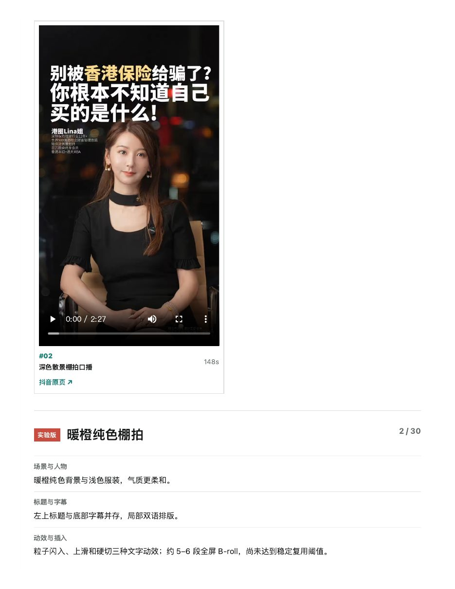
图12｜芷柠说：夜景情绪、东方访谈与明亮观点卡三套成熟母版。
5.9 8个账号的总判断
- 稳定账号通常不是“一个漂亮房间”，而是固定人物距离、固定光线关系、固定标题区和固定字幕节奏的组合。
- 多母版并不意味着混乱，前提是每套母版承担不同的内容功能或信任任务。
- 场景变化时，文字、字幕和剪辑也需要一起变化；只换背景不算独立母版。
- 高剪辑并不自动高级。谢员外、董可人、黄永鳌都用低剪辑建立稳定识别；动作、状态和排版同样可以承担节奏。
六、什么是好的IP版面画面
定义：好的版面不是把人放进一个漂亮房间，而是让画面在人物开口之前，就已经说明她是谁、为什么可信、她和观众是什么关系。
6.1 三项基础判断
- 第一眼：先看到人物，而不是先看到家具、城市或摆件。
- 一秒钟：不听声音，也能感到她是权威、陪伴、资源或理性型人物。
- 三十条：不是偶然拍好一条，而是同一套母版能够长期稳定复制。
6.2 五因素乘法公式
好版面 = 人物可信 × 场景作证 × 构图聚焦 × 光色统一 × 长期复制。五项是乘法关系，任一项明显不足都会拉低整体质量。
| 因素 | 判断标准 |
|---|---|
| 人物可信 | 状态、眼神、姿态、年龄感和职业阶段一致 |
| 场景作证 | 空间不是装饰，而是在证明身份、资源或关系感 |
| 构图聚焦 | 脸是第一视觉锚点，眼位、人物比例和留白有明确目的 |
| 光色统一 | 肤色自然，人物与环境分离，颜色指向同一种人格 |
| 长期复制 | 换选题和服装后，仍能保持账号识别度 |
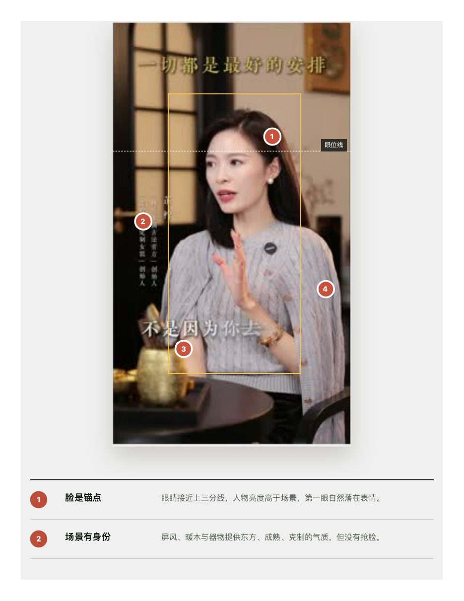
图13｜正确视线顺序：脸与状态先于场景和装饰。
6.3 四类信任原型
| 信任类型 | 观众感受 | 适合构图与光线 | 风险 |
|---|---|---|---|
| 权威编辑型 | 有阅历、有判断、说话有分量 | 正中或轻偏侧；侧光、明暗明确 | 过暗会显压迫 |
| 温暖陪伴型 | 愿意听，也能陪观众把问题想清楚 | 坐姿中景、身体微侧；柔光、暖色层次 | 太柔会失去专业 |
| 资源身份型 | 城市、圈层与视野本身就是能力证据 | 人物与窗景共存；窗光加面部补光 | 景比人亮会失焦 |
| 理性分析型 | 信息清楚、判断克制、没有多余表演 | 干净中近景；中性高调柔光 | 太平会像普通会议 |
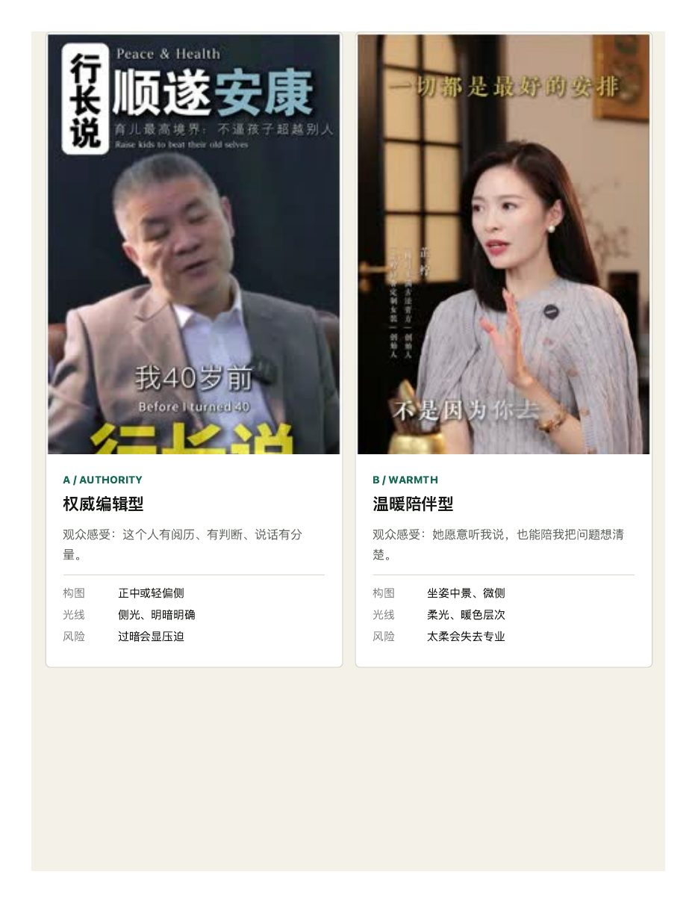
图14｜“好”不是一种审美，而是四种不同的信任建立方式。
6.4 100分验收表
| 判断维度 | 分值 | 拿高分的画面 |
|---|---|---|
| 人物与IP匹配 | 20 | 年龄感、职业阶段、可信方式一致 |
| 人物视觉中心 | 15 | 第一眼看脸，眼位和人物比例稳定 |
| 构图与姿态 | 15 | 肩线完整、留白有目的、动作不出框 |
| 光线与肤色 | 15 | 眼神光自然，脸有明暗，肤色真实 |
| 场景证据与层次 | 15 | 一个主要身份线索，前中后景清楚 |
| 颜色与服装关系 | 10 | 主色明确，人物与背景有亮度分离 |
| 动态稳定 | 5 | 转头和手势后，曝光、对焦、构图不变 |
| 长期复制 | 5 | 同机位可连续拍摄20至30条 |
分数解释：85至100分进入标杆母版池；75至84分可用但需修正；65至74分属于普通口播；低于65分不建议继续投入制作。
四项一票否决：场景与人物定位冲突；脸部明显变形或肤色错误；背景抢过人物；画面无法稳定重复。
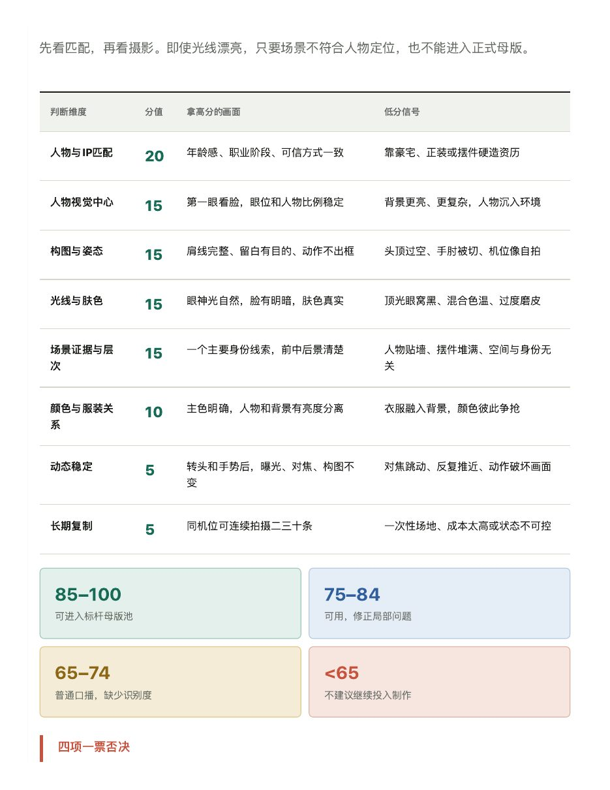
图15｜评分用于统一决策，不用“贵不贵”或个人喜好代替标准。
七、动态视频为什么必须单独验收
- 主页封面裁切可能比真实播放更饱满，进入视频后出现大面积无效区域；
- 人物转头和手势会改变脸部曝光、对焦、肩线和字幕安全区；
- 固定机位不等于呆板，节奏可以由眼神、停顿、克制手势和语义字幕完成；
- B-roll、截图和数据卡必须为证据服务，不得让插入素材抢过人物。
代表视频证据：
- 有毒有料陈葭怡｜深色幕布暖侧光
- 微易老周｜红幕舞台脱口秀
- 财商-黄永鳌｜暖色商务口播
- 年金一哥｜黄嘉祥｜车内自然光近景
- 谢员外观世界｜深蓝杂志封面卡
- 董可人｜上下分区信息卡
- 港圈Lina姐｜香港天际线明亮口播
- 芷柠说｜夜景窗边情绪访谈
八、每日高审美画面监测：首日试跑
8.1 筛选结果
首日从53条跨行业搜索结果出发，7个账号进入主页复查，4个账号通过粉丝门槛，1个账号在静态与主页稳定性上接近标杆，最终0个账号通过动态验收达到85分。0新增不是失败，而是证明准入线没有因交付数量而降低。
图16｜粉丝量先证明运营成熟，视觉质量仍由主页和动态验收决定。
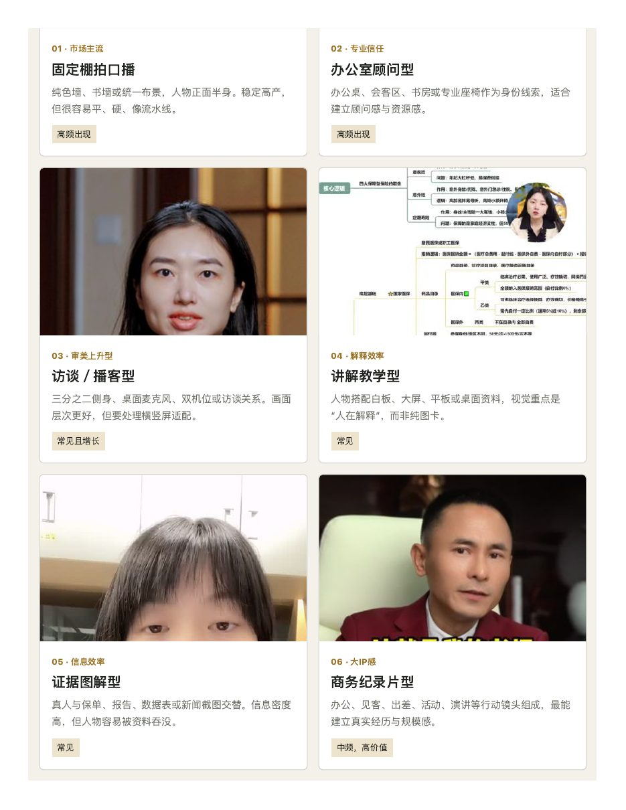
图17｜每日监测围绕九类市场画面寻找稀缺母版，而不是重复收集普通口播。
8.2 近线案例：何智娟律师，83分
暖木屏风、桌面麦克风、深色服装和稳定手势共同建立理性权威感；主页母版重复超过3次，脸部曝光与背景层次稳定。但实际视频为16:9横屏，进入抖音竖屏后出现大面积无效区域，主页封面与实际播放体验不一致，因此没有进入85分标杆池。
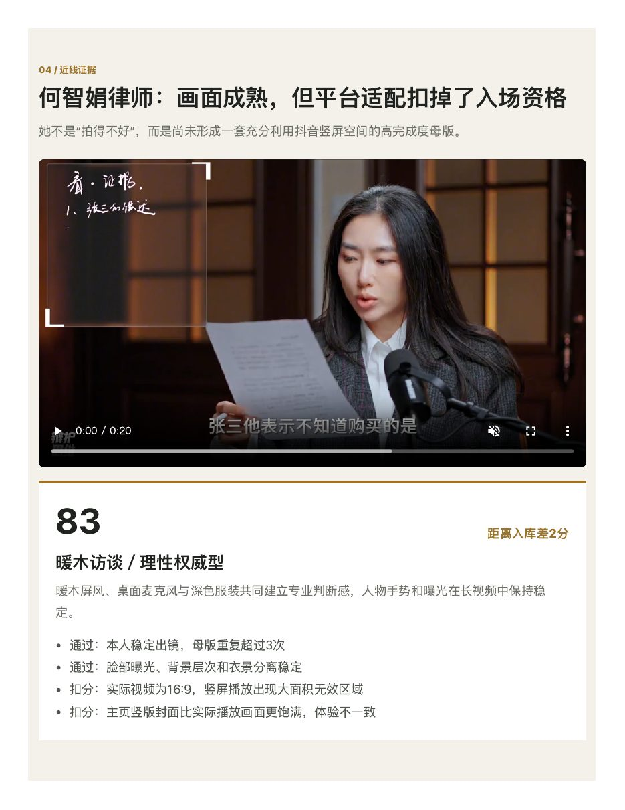
图18｜静态画面成熟，但竖屏平台适配不足，最终停在83分。
8.3 其他未入库案例
| 账号 | 粉丝 | 视觉分 | 未入库原因 |
|---|---|---|---|
| 林清浅律师 | 128.6万 | 79 | 母版稳定，但重磨皮、肤色不真实，人物与背景层次偏平 |
| 斯黛拉律师 | 65.1万 | 72 | 访谈、自拍、活动和剧集海报混杂，缺少稳定主页系统 |
| 程律来了 | 71.9万 | 61 | 手机近距离自拍为主，场景证据、景深和稳定光线不足 |
每日监测的重点：优先寻找30万粉丝以上的保险个人IP，以及50万以上、采用竖屏访谈、办公室顾问、商务纪录片和生活场景口播的跨行业专业IP。没有达到85分，保持0新增。
九、阶段形成的六项管理结论
- 粉丝量是成熟度门槛，不是审美分。大账号可能视觉普通，小账号也可能偶发拍得漂亮，两者都不能跳过主页和动态核验。
- 单条优质画面不等于稳定母版。正式母版必须在主页重复至少3次，并能在人物运动中保持质量。
- 应该研究“场景”，不是“背景”。场景承担身份、资源和关系证明；只负责装饰的漂亮房间，对IP没有真正价值。
- 判断顺序决定结果。人物大于状态，状态大于场景证据，场景证据大于装饰细节。
- 封面与视频必须分开验收。封面裁切、播放比例、字幕动效、手势和对焦都会改变最终观看体验。
- 好的画面必须匹配人物。权威、陪伴、资源、理性四种信任原型没有高低之分，错配比“不够漂亮”更严重。
十、未来30天推进计划
| 周期 | 工作重点 | 交付结果 |
|---|---|---|
| 第1周 | 补齐标杆池；每天约50条初筛、5至8个主页复查，不设强制入库数量 | 高质量候选、近线案例与淘汰原因 |
| 第2周 | 沉淀首批8至12套85分以上母版，重点补办公室、竖版访谈、纪录片和生活场景 | 标杆母版库V1 |
| 第3周 | 按权威、陪伴、资源、理性四类信任方式匹配内部人物 | 每个IP一套主母版、一套补充母版 |
| 第4周 | 选择2至3个IP试拍，固定机位、灯光、人物比例和场景层次 | 实拍样片与第一轮发布数据复盘 |
下一阶段四项生产成果：标杆母版库、人物匹配表、拍摄规范、画面版本与停留/完播/互动数据的对应复盘。
十一、需要管理层确认的事项
- 确认保险30万、跨行业50万粉丝门槛，主页3次复现和85分入库线；
- 选择2至3个内部IP作为首轮试拍对象，明确年龄、职业阶段与希望建立的信任类型；
- 提供最小制作资源：场地、灯光、摄影与服装配合，用一轮实拍把判断标准落到真实画面。
十二、附件与证据入口
完整合并附件：《保险个人IP视觉研究完整汇报-2026-07-26.pdf》，共128页，依次包含阶段总汇报、保险行业30个IP市场扫描、8个标杆IP深度拆解、优秀IP版面判断标准、每日高审美画面监测。
动态证据附件：权威型、温暖型、资源型和83分近线案例短视频，用于验证人物转头、手势、曝光、构图和竖屏比例。